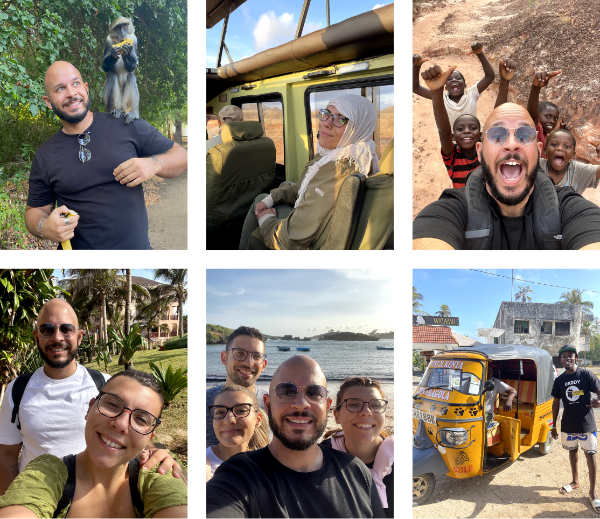
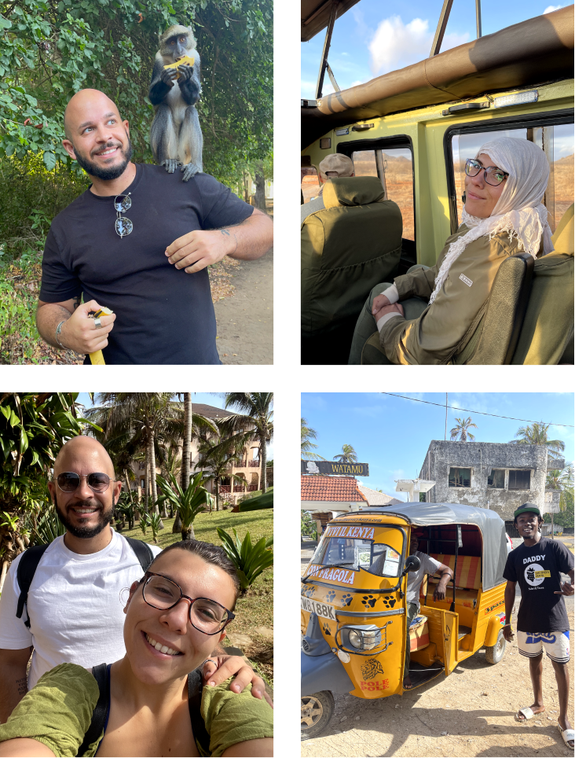
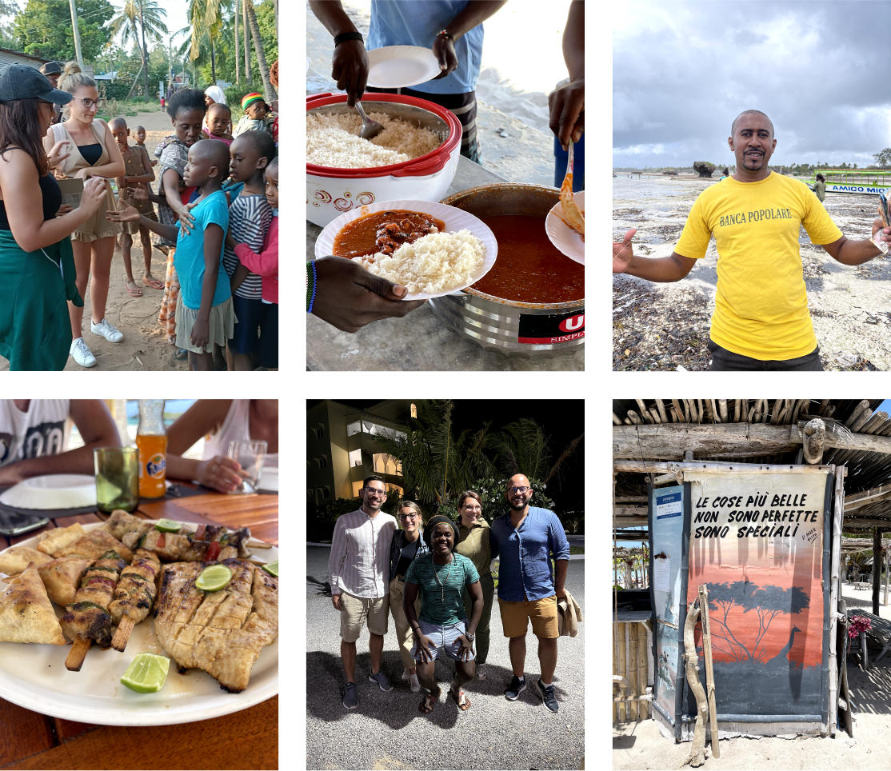
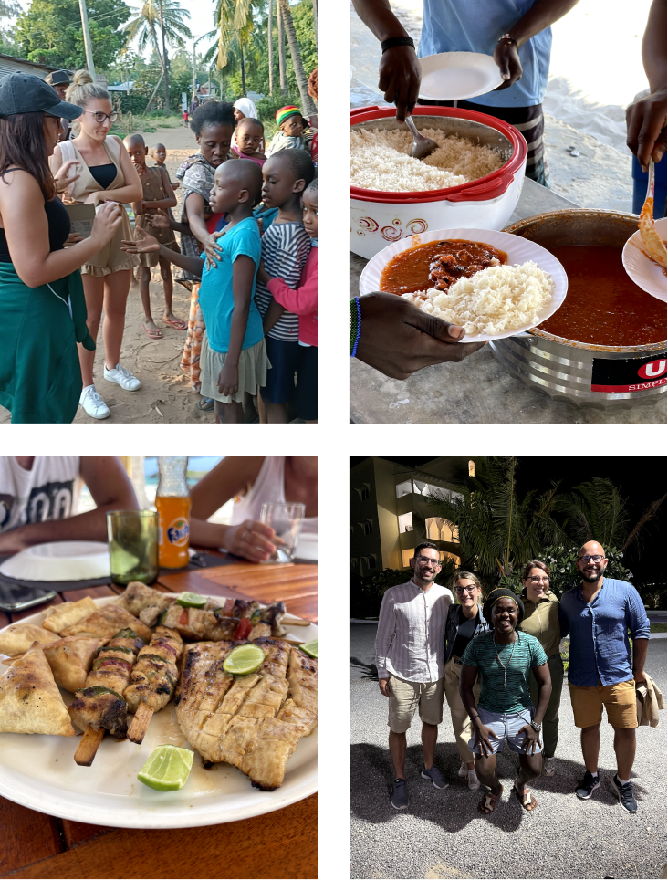
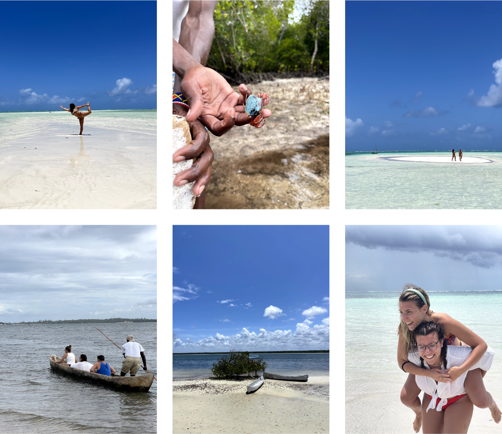
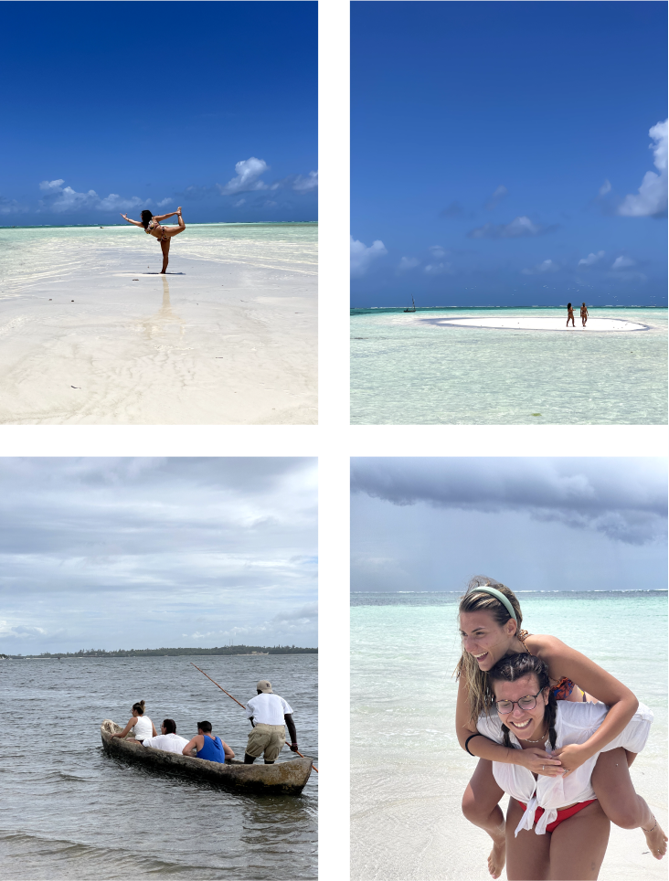

Kenya 2022, un viaggio in Africa a Watamu
jambo bwana, hakuna matata.
2022 — Mamma Africa chiama tutti prima o poi. Noi abbiamo risposto con piacere. L’Africa è quel posto in cui cultura, sapori, natura, animali, inclusione e semplicità si incontrano.
 Galleria di immagini del viaggio in Kenya del 2022, Alessio Cardelli - 2023
Kenya 2022, un viaggio in Africa a Watamu<
🌍 food, people & culture
Accoglienza, disponibilità, amicizia, sono questi i tratti che distinguono le persone del posto. In sostanza, ti senti subito a casa. Pesce fresco alla griglia marinato come solo loro sanno fare, riso, pollo e un mare di spezie incredibili che meritano di essere assaporate. C’è anche tanta cucina italiana ma se viaggi per mangiare quello che mangeresti a casa tua, allora non vale la pena viaggiare.
 Galleria di immagini del viaggio in Kenya del 2022, Alessio Cardelli - 2023
Kenya 2022, un viaggio in Africa a Watamu<
🦁 in cerca dei big fives
Paesaggi rossi e sabbiosi, oasi di verde ricolme di animali, sole di giorno, umido di notte: la savana è variegata così come gli animali che la vivono e la chiamano casa. Leoni, giraffe, bisonti, ippopotami, elefanti, ghepardi e tutta una serie infinita di piccoli animali che si vedono solo nei documentari.
Grazie Fragola Discovery Kenya! (cercalo su Instagram)
Galleria di immagini del viaggio in Kenya del 2022, Alessio Cardelli - 2023
Kenya 2022, un viaggio in Africa a Watamu<
🐬 sea, fishes & sun
Acqua calda e cristallina, sabbie bianchissime e spiagge infinite dove è possibile camminare per centinaia di metri con l’acqua alle caviglie. Snorkeling alla barriera corallina, navigazione lungo la costa, cibo locale cucinato sulla spiaggia, giro in canoa tra le mangrovie e ballo Ghiriama per digerire. Esperienze incredibili, posti incantati, flora e fauna indominata.
 Galleria di immagini del viaggio in Kenya del 2022, Alessio Cardelli - 2023
Kenya 2022, un viaggio in Africa a Watamu<
✈️ info utili per te
Volo Ethiopian Airlines, da Fiumicino ad Addis Abeba, scalo di 4h, poi volo diretto per Mombasa. Da Mombasa con un transfer in auto, con il nostro amico Freddie, siamo arrivati a Watamu.
Abbiamo soggiornato al Blue Bay Cove, un residence nel centro di Watamu, sulla scogliera a 100mt dal mare. Persone deliziose, posto molto bello e pulito, posizione centralissima, casa accogliente.
E i documenti? Un’assicurazione sanitaria e di viaggio con Cowerwise, il visto per il Kenya, tutti i documenti necessari per vaccinazioni e autocertificazioni Covid e, ovviamente, il passaporto.
Per il resto consiglio di affidarsi ad un’agenzia sul posto seria, che si occuperà di tutto e sarà il tuo punto di riferimento. Noi ci siamo affidati a Fragola Discovery Kenya e alla simpaticissima Serena :)
Galleria di immagini del viaggio in Kenya del 2022, Alessio Cardelli - 2023